Figures
global_unemployment_vs_layoffs.png
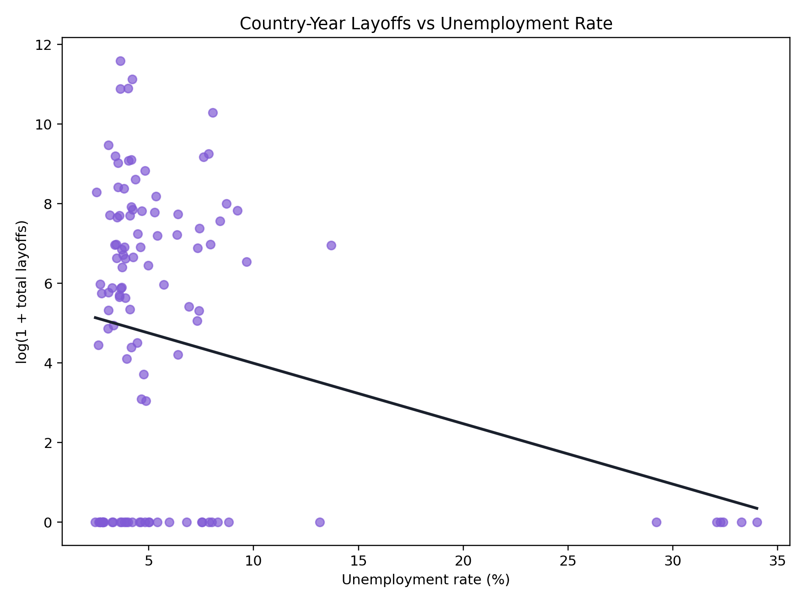
{kind=link}
global_youth_unemployment_vs_layoffs.png
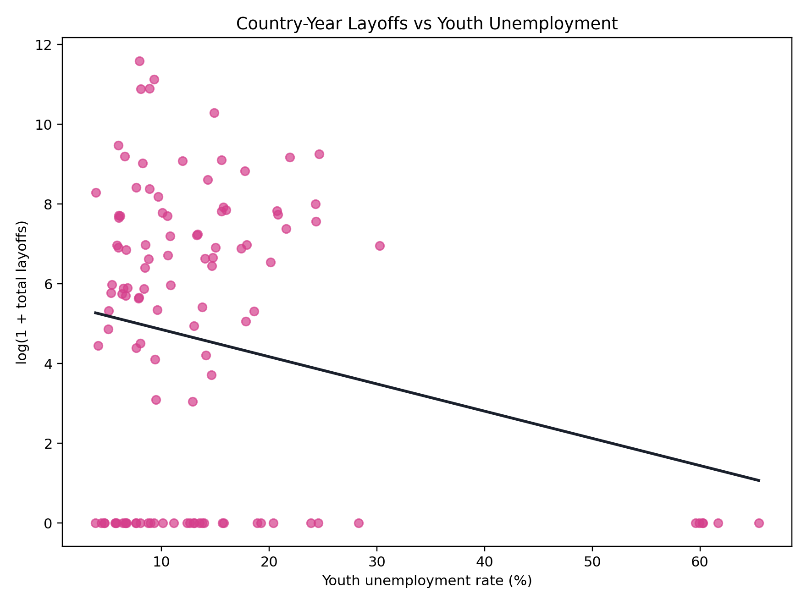
{kind=link}
layoffs_ai_vs_non_ai_boxplot.png
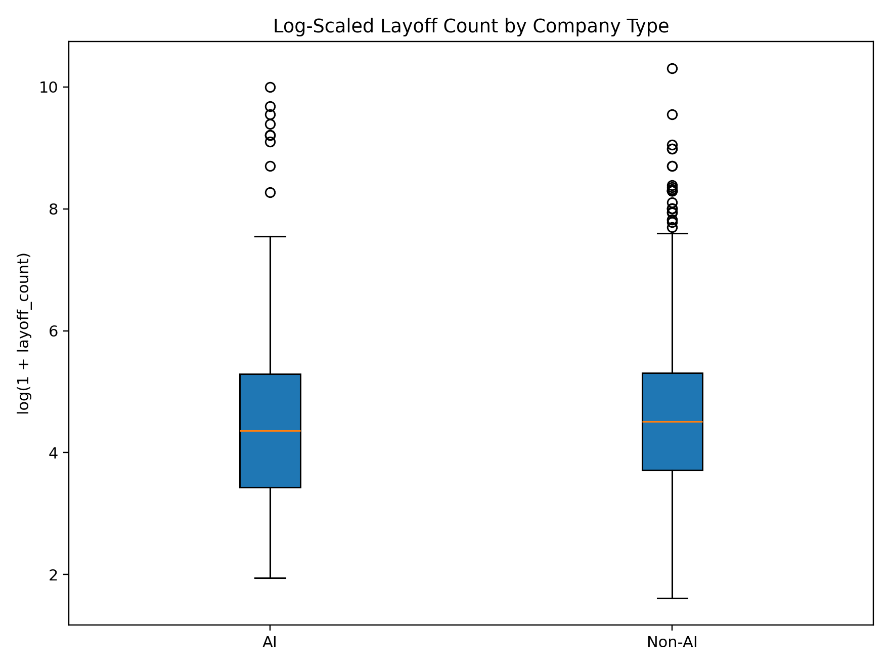
{kind=link}
layoffs_distribution_histogram.png
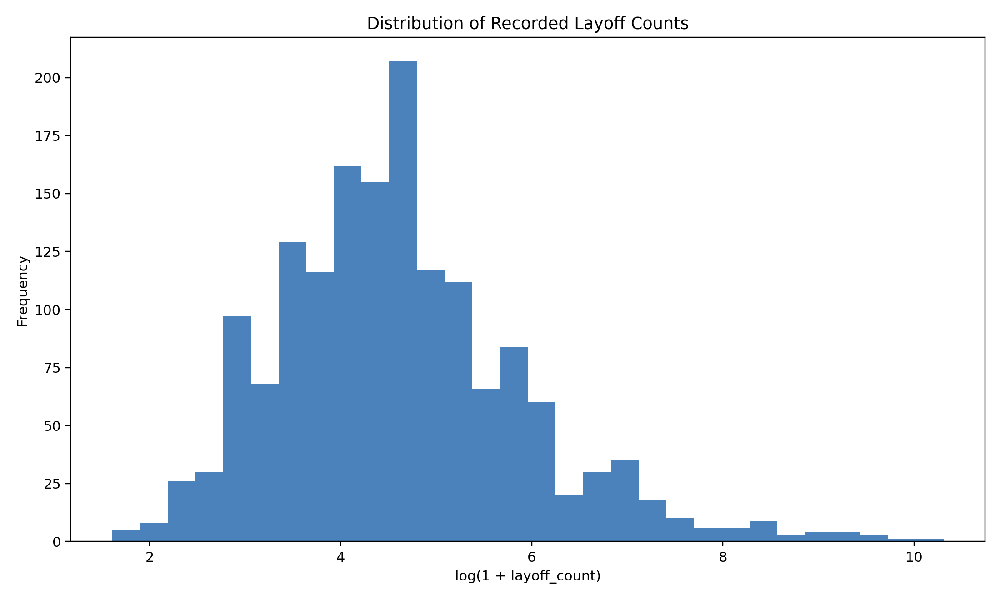
{kind=link}
layoffs_funding_vs_size.png
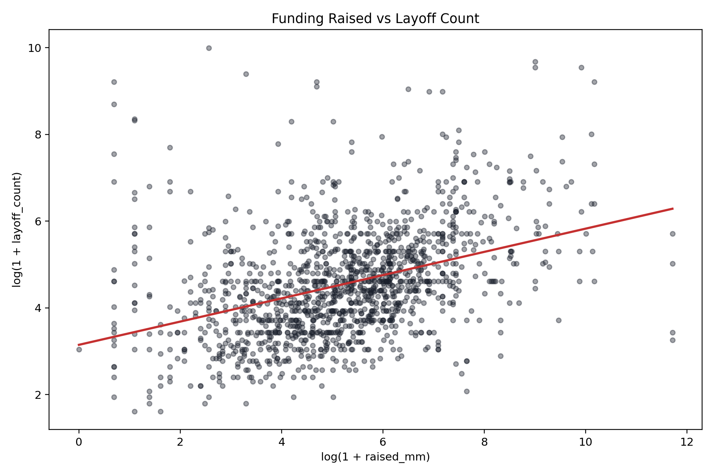
{kind=link}
layoffs_monthly_trend_ai_vs_non_ai.png
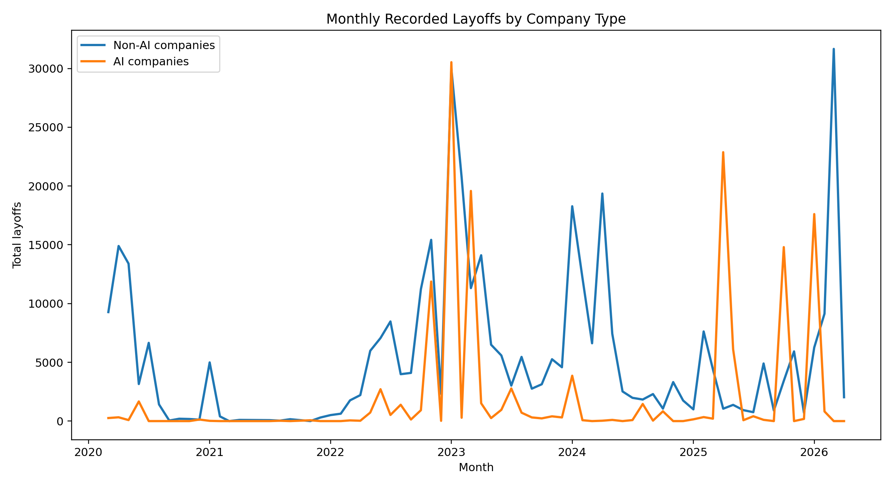
{kind=link}
layoffs_top_countries.png
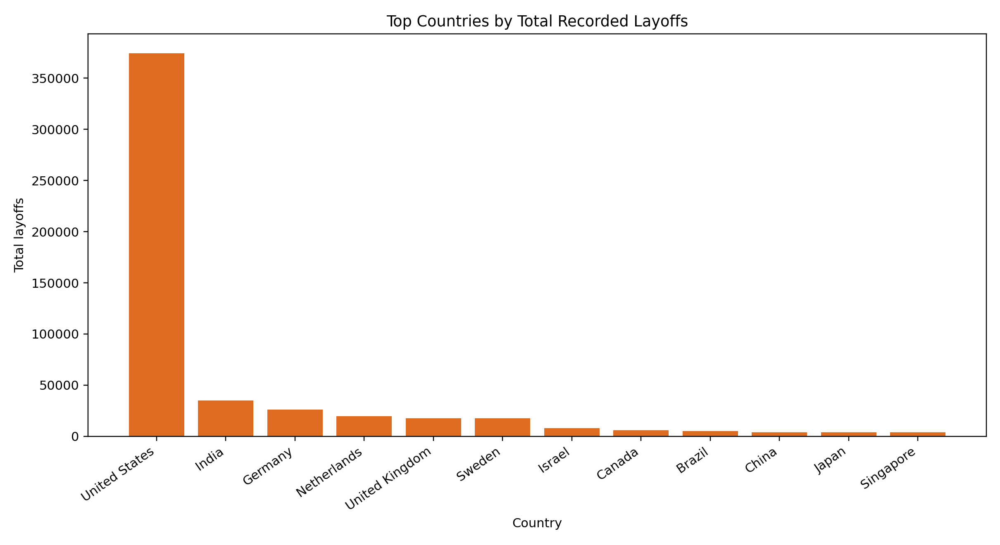
{kind=link}
layoffs_top_industries.png
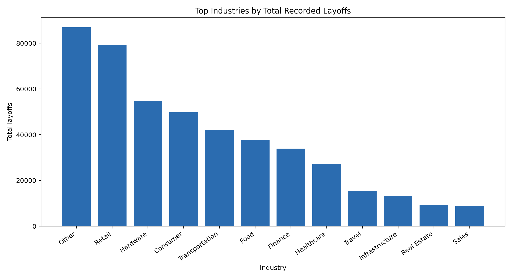
{kind=link}
news_average_sentiment_by_type.png
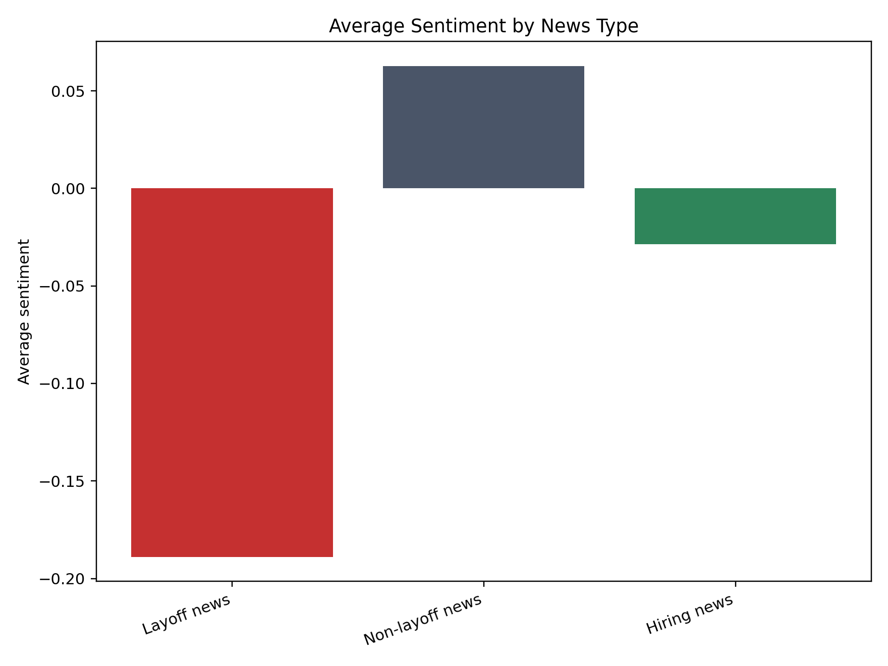
{kind=link}
news_monthly_sentiment_trend.png
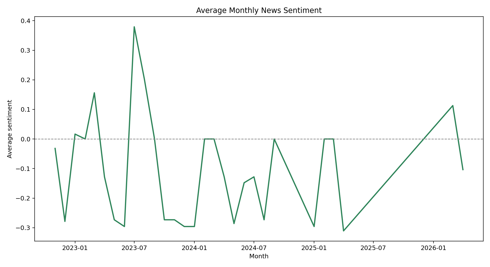
{kind=link}
news_sentiment_category_counts.png
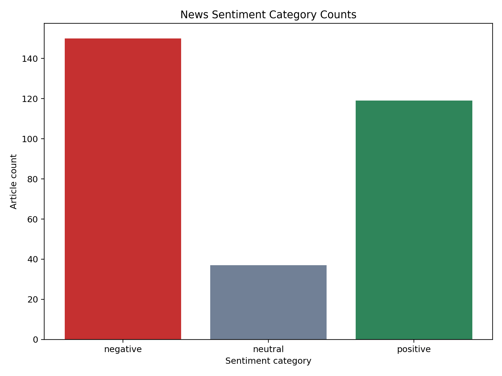
{kind=link}
us_labor_vs_layoffs_timeseries.png
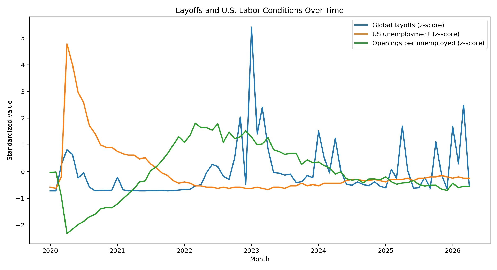
{kind=link}
us_unemployment_vs_global_layoffs.png
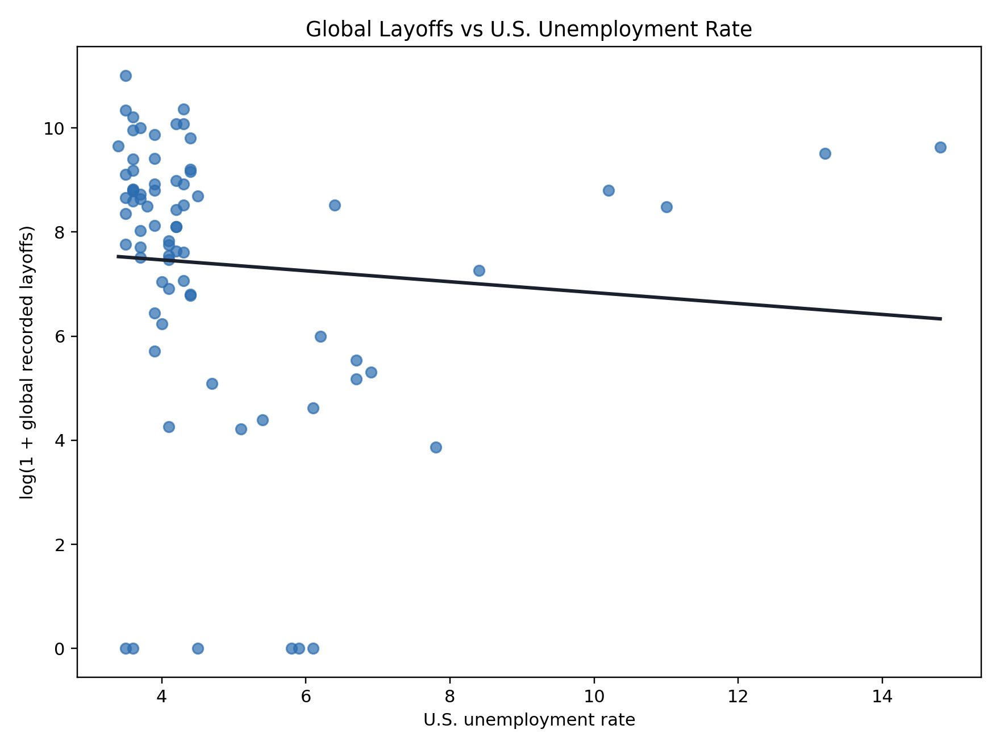
{kind=link}
Tables
- data_quality_summary.csv
- global_country_summary.csv
- global_labor_correlation_matrix.csv
- global_labor_layoff_merge.csv
- global_labor_statistical_tests.csv
- layoffs_ai_vs_non_ai_summary.csv
- layoffs_industry_ai_chi_square.csv
- layoffs_monthly_summary.csv
- layoffs_numeric_summary.csv
- layoffs_overall_summary.csv
- layoffs_statistical_tests.csv
- layoffs_top_countries.csv
- layoffs_top_industries.csv
- layoffs_top_stages.csv
- news_monthly_summary.csv
- news_overall_summary.csv
- news_sentiment_summary.csv
- news_statistical_tests.csv
- us_labor_correlation_matrix.csv
- us_labor_monthly_merged.csv
- us_labor_statistical_tests.csv